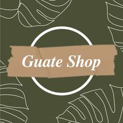

Guateshop
Tu mejor opcion para comprar.
Listas
ROPA Y ARTÍCULOS ESPECIALES
- Zapatos de trabajo y botas.
- Sombrero y guantes.
- Lentes de sol.
- Radio de baterías.
- Frazadas o bolsas de dormir.
LISTA DE VÍVERES NECESARIOS
- Carne, frutas y vegetales enlatados listos para comer.
- Azúcar, sal y pimienta.
- Vitaminas
- Un abridor de latas manual.
- Linterna con baterias extra
- PARA LAS MASCOTAS
- Documentos de vacunas y sus identificaciones
- Comida y agua
- jaula
- medicina
- correa de paseo y su bozal